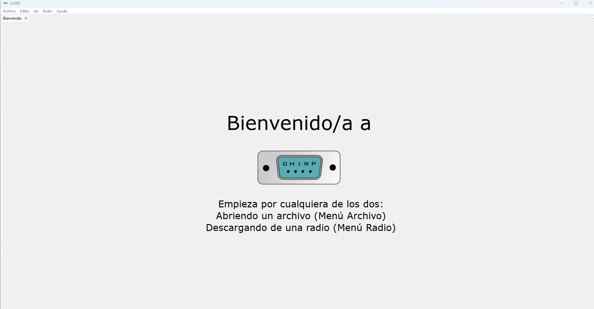
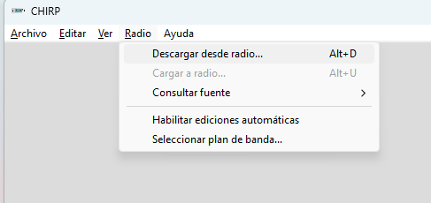
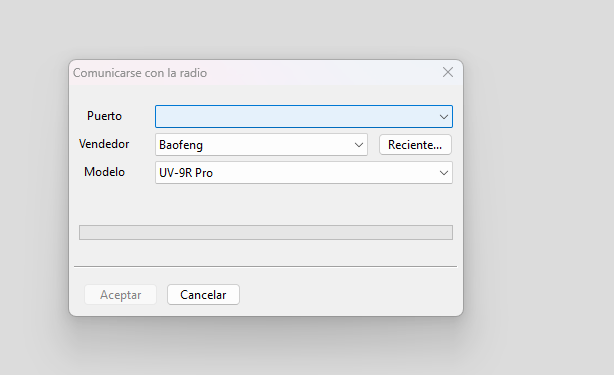
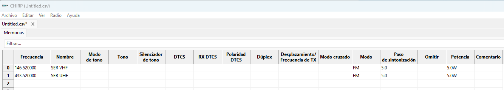

Antes de comenzar
- Radio con batería cargada y su antena instalada.
- Cable USB de programación compatible con el modelo: un cable de audio no sirve.
- Computador y CHIRP-next desde la descarga oficial. Elige tu sistema e instala siguiendo sus instrucciones.
- Confirma el modelo en la lista de equipos compatibles.

1. Conecta tu radio
Con la radio apagada, conecta el cable firmemente al handy y al USB del computador. Enciende el equipo y sigue las indicaciones de CHIRP para tu modelo. En Windows, el cable aparece como un puerto COM; si no aparece, revisa el controlador del fabricante del cable.
2. Descarga desde la radio y guarda el respaldo
Abre el menú Radio → Descargar desde radio… (Download From Radio).

En la ventana Comunicarse con la radio, selecciona estos tres datos:
- Puerto: el puerto COM que corresponde a tu cable USB de programación.
- Vendedor: la marca del equipo; por ejemplo, Baofeng.
- Modelo: el modelo exacto del handy conectado. Para el ejemplo de esta guía, UV-5R, solo si corresponde a tu equipo.

Luego pulsa Aceptar, sigue las indicaciones de CHIRP y espera a que termine la lectura. Guarda la imagen original con Archivo → Guardar como (File → Save As), por ejemplo UV5R-respaldo-original.img. Conserva esa copia y trabaja con otra.
Tu ejemplo: VHF y UHF en CHIRP

La captura muestra 146.520 MHz (VHF) y 433.520 MHz (UHF). CE3SER publica redes simplex en ambas; consulta sus datos vigentes. Transmite solo donde tu licencia lo permita.
La pestaña Untitled.csv es una lista de canales. Lee primero tu radio con Download From Radio; en esa imagen usa Archivo → Importar para seleccionar el CSV y revisar las memorias de destino. Después guarda la imagen y carga desde su pestaña. No puedes cargar directamente un CSV como si fuera la imagen de la radio.
3. Completa una memoria
Usa una fila libre de la imagen que acabas de leer. Este ejemplo sirve para escuchar una frecuencia simplex de encuentro:
- Frecuencia:
146.520000MHz. - Nombre:
ENCUENT, nombre corto para reconocer el canal. - Dúplex: déjalo vacío para este canal de comunicación directa, sin repetidor ni desplazamiento.
- Desplazamiento:
0.000000para este ejemplo simplex. - Modo de tono: vacío / None; sin filtro de tono para escuchar.
- Modo:
FM.
Para escuchar sin transmitir, no presiones el PTT. Como opción adicional, Dúplex off puede inhibir la transmisión si el modelo lo admite. Esa opción no es un desplazamiento; comprueba su funcionamiento sin transmitir en frecuencias donde no tienes autorización.
¿Y los repetidores?
Para un repetidor necesitas otros datos. Busca las frecuencias de tu zona: allí TX y RX están vistos desde el repetidor.
- Tu radio escucha el TX del repetidor.
- Tu radio transmite hacia el RX del repetidor.
Resta TX menos RX de tu radio. El signo del resultado determina Dúplex + o −; en Desplazamiento ingresa el valor sin signo, en MHz. Por ejemplo: RX 146.820 y TX 146.220 dan −0.600 MHz. En CHIRP: Frecuencia 146.820, Dúplex − y Desplazamiento 0.600.
600 kHz = 0.600 MHz; 500 kHz = 0.500 MHz; 5 MHz = 5000 kHz. Calcula a partir de los datos publicados, sin suponer el desplazamiento por banda. Algunos otros CPS piden RX y TX por separado.
El subtono también importa
Si el repetidor exige CTCSS, selecciona Tone en Modo de tono y escribe el valor indicado en Tono, en Hz. Puedes escuchar un repetidor y no conseguir que retransmita tu señal si falta el subtono correcto. No todos lo requieren; algunos usan DCS. Confirma el sistema y valor con su responsable.
Tone envía el subtono sin filtrar la recepción. TSQL también filtra lo que escuchas: no lo actives por defecto. El subtono no cifra la conversación ni la hace privada. El listado no garantiza que el repetidor esté operativo.
4. Guarda y carga los cambios
Guarda otra imagen, por ejemplo UV5R-canales.img. Con esa pestaña abierta, usa Radio → Cargar a la radio (Upload To Radio) y sigue las indicaciones. No desconectes el cable ni apagues la radio durante la transferencia. Al terminar, apaga el equipo antes de retirar el cable y vuelve a encenderlo.
5. Comprueba en modo canal
Selecciona el modo de memorias (MR) con VFO/MR y busca el canal guardado. Comprueba frecuencia, nombre y recepción. Para comprobar lo escrito, también puedes volver a leer la radio con CHIRP y comparar la memoria.
Si algo falla
- No responde: revisa batería, encendido y conector completamente insertado.
- Puerto ocupado: cierra otros programas que usen el cable y confirma el COM seleccionado.
- Modelo no compatible: revisa la variante exacta; no pruebes modelos al azar.
- No escuchas: revisa volumen, squelch y filtros de tono. Puede no haber actividad.
Documentación para seguir
Menús y opciones pueden variar con la versión y el idioma. Guía preparada el 1 de octubre de 2026 a partir de la documentación oficial:
Esta guía explica el procedimiento; no sustituye la verificación de tu modelo ni una prueba con tu equipo.